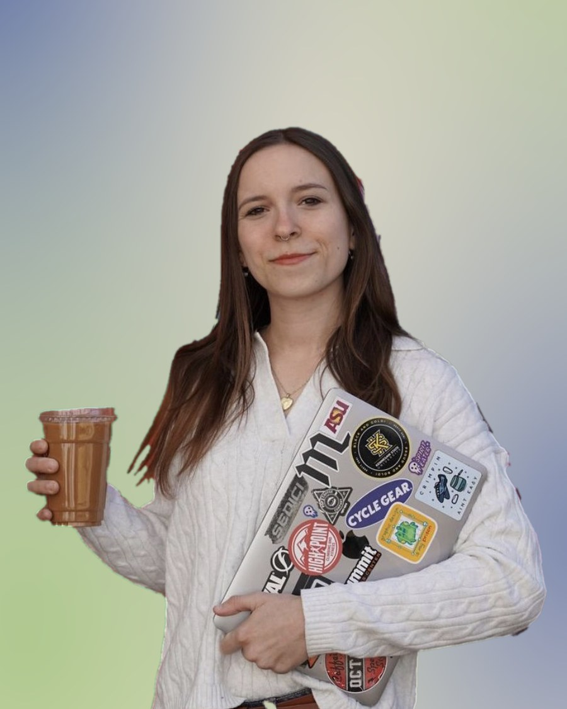
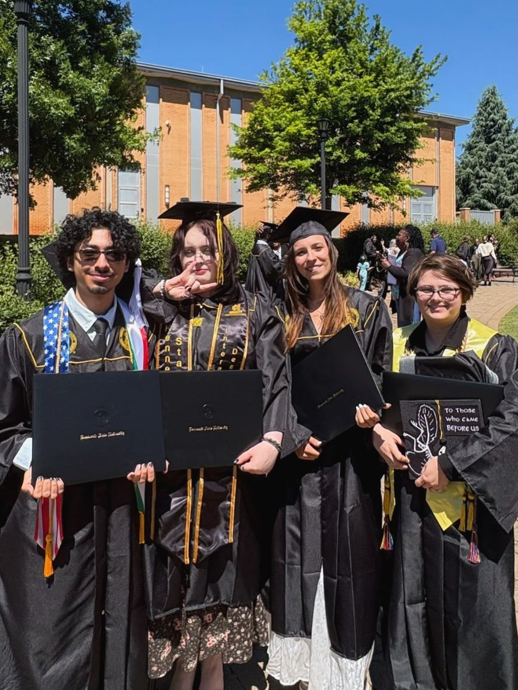
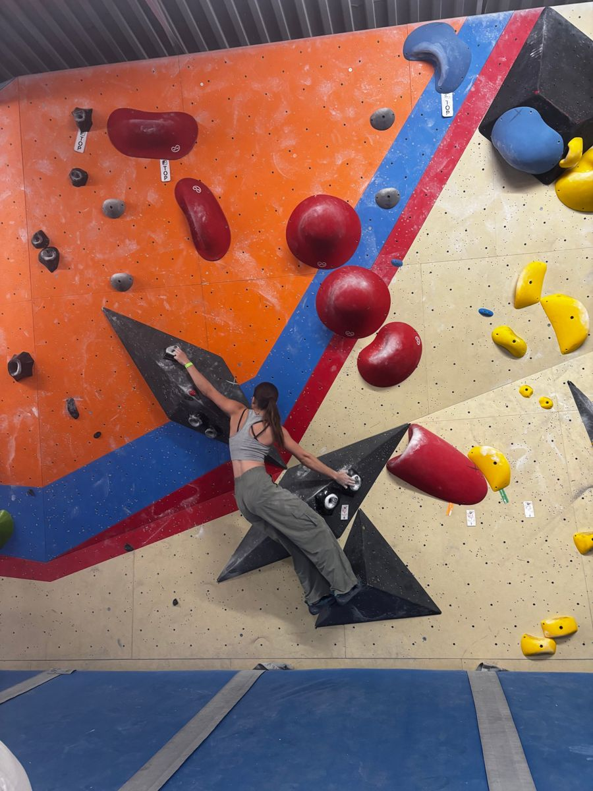
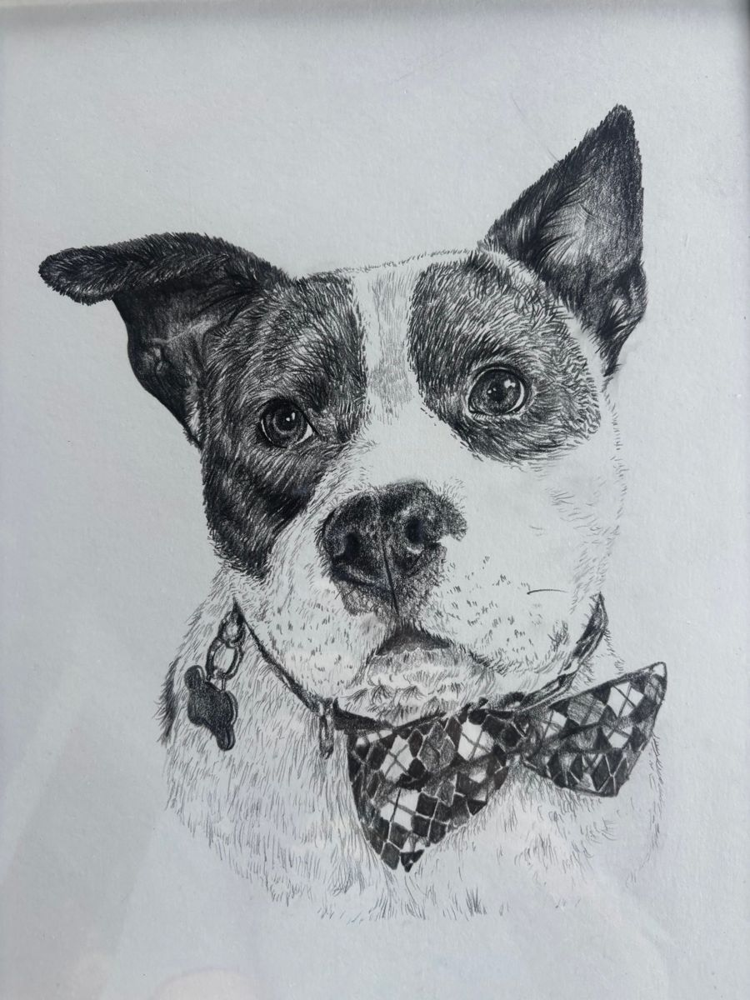

Nessie
An app that supports students' mental health and well-being, with a mood calendar, journaling, breathing techniques, and community support. I pitched the idea and led the team.
“I enjoy the behind the scenes work and crafting designs that make a real impact.”

An app that supports students' mental health and well-being, with a mood calendar, journaling, breathing techniques, and community support. I pitched the idea and led the team.
A platform for discovering your personal style and learning fashion fundamentals. Users curate mood boards, explore new fashion genres, and earn achievements through learning modules.
I'm Avery, a user interface and research designer based in Kennesaw, Georgia. I graduated from Kennesaw State University in 2026 with a B.S. in Interactive Design.
My favorite part of design is the work that happens behind the scenes: usability testing, research, iterating on designs, finding inspiration, and solving problems creatively as part of a forward-thinking team.
I've always seen things from an artist's point of view. I've taken art classes since elementary school, and I've been told I have a high visual IQ.
I'm passionate about interaction design because my goal is to make our everyday use of technology something to look forward to, something that improves our lives and helps people connect with others without taking away from our offscreen moments.


You'll usually find me at my local climbing gym. I started rock climbing a few years ago and was hooked instantly. The community is fun and supportive, and I've made so many great friends there. Every route is a problem to solve, and climbing keeps me focused on both my mental and physical health.
I'm also on a mission to find the best latte around. My current favorite is the Crypt Keeper Latte at Mr. Tombstone's Coffee Emporium in Kennesaw. If you're ever in the area, you have to try it!
I'm currently taking pet portrait commissions, where I use pencil to create photorealistic drawings.
Otherwise, I'm reading graphic novels or wandering around an art convention.
Know a coffee shop I should try? Tell me!

I serve guests in a busy, high-volume restaurant. I work with the front-of-house team, including bartenders and food runners, to keep service running smoothly, and I make sure every guest feels like a VIP.
I trained and onboarded new baristas and kept service consistent through long morning rushes.